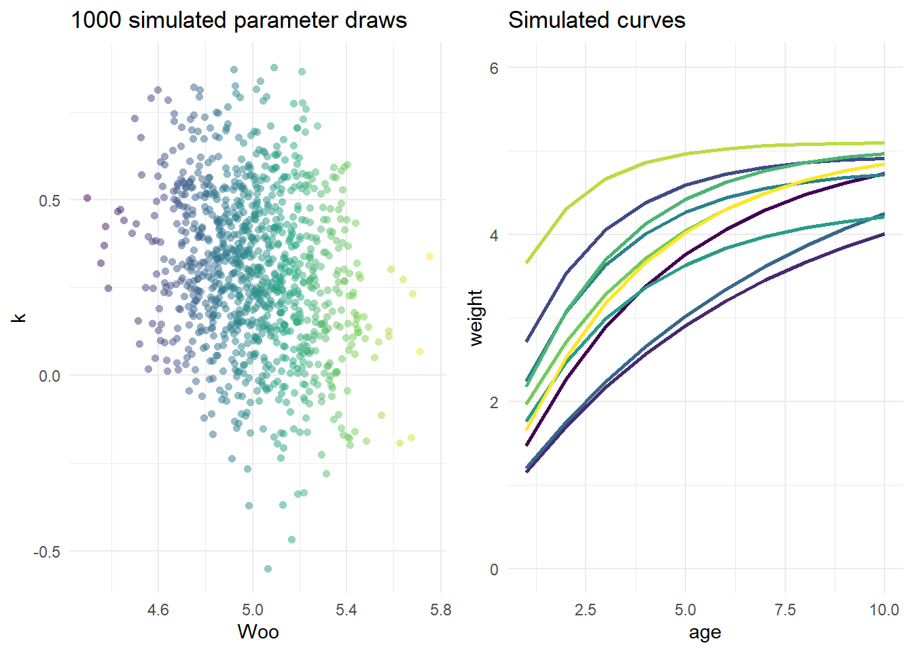
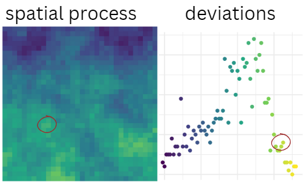
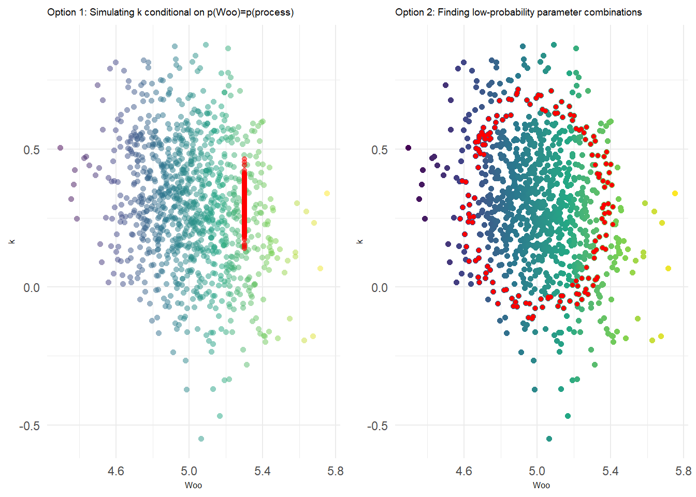

mu_theta <- c(5, 0.3, -0.5) ## Winf, K, t0
vcov <- diag(c(0.05, 0.05, 0.2)) # Variance-covariance of mu_theta
# Define the variances of each parameter
var1 <- 0.05
var2 <- 0.05
var3 <- 0.05
# Define the covariances
cov12 <- sqrt(var1 * var2) * -0.2 # negative correlation
cov13 <- sqrt(var1 * var3) * 0.1 # Weak positive correlation
cov23 <- sqrt(var2 * var3) * 0.1 # Weak positive correlation
# Construct the variance-covariance matrix
vcov_matrix <- matrix(c(var1, cov12, cov13,
cov12, var2, cov23,
cov13, cov23, var3), nrow = 3, byrow = TRUE)
## simulate random draws of the parameters
sim <- MASS::mvrnorm(1e3, mu_theta, vcov_matrix)Linking Spatial Processes to Covarying Paramters
The dream
There are lots of real-life processes that we know are driven by the environment, and exhibit covariance amongst the parameters we use to model them. People interested in forecasting are deeply curious about how to best model these processes, but I find that folks (especially in ecology) tend to overthink this stuff. We build highly complex agent-based models to represent relationships between the environment, demographic traits, and population dynamics, without considering simpler ways of representing these relationships. These approaches have their place, but shouldn’t be the default tool when we want to investigate high-level questions regarding management and policy outcomes. Even if we aren’t 100% certain on the mechanism, or even the magnitude, of these connections, building cleaner & quicker simulations is the ticket to knowledge-building.
In this post, I discuss an intuitive way for us to work with co-varying process parameters that avoids building a complex mechanistic model, and the considerations when selecting values that are “as extreme as” your underlying spatial/environmental process.
The example
We’ll work with a classical von Bertalanffy growth curve representing fish weight-at-age. This is a classical concept in fisheries biology and is backed by bio-energetics theory. That matters because we have ample evidence & rationale for weight-at-age to vary according to environmental conditions (temperature, for example.) S/O to Grant Adams who helped develop some of the multivariate simluation code used in the first part here as part of our growthForecast R package.
Multivariate Simulation
This first step illustrates how we’d generate a “cloud” of values corresponding to \(W_\infty\) (asymptotic weight), \(k\) (growth rate) and \(t_0\) (age at zero weight, which could be negative), and display the resultant curves. We need to specify \(mu_\theta\), mean values for each of these parameters, and \(\Sigma\), the covariance matrix. It’ll be a square matrix with dimensions given by the length of \(\theta\).
To briefly review: \[ \Sigma = \begin{bmatrix} var(\theta_1) & Cov(\theta_2,\theta_1) & Cov(\theta_n,\theta_1) \\ Cov(\theta_2,\theta_1) & var(\theta_2) & Cov(\theta_2,\theta_3) \\ Cov(\theta_3,\theta_1) & Cov(\theta_3,\theta_2)& var(\theta_2) \\ \end{bmatrix} \]
The diagonal elements \(var(\theta_n)\) represent the variance of an individual parameter. The off-diagonal elements are the covariances: a representation of the directional relationship, or joint variability, of two random variables. Large values mean that the two parameters tend to mirror each other well (if positive) or inversely (if negative). Values closer to zero mean they are less responsive to one another.
We can leverage the covariance matrix to ensure that when we generate random draws representing our von B parameters, we’re conserving the biological fact that \(W_\infty\) and \(k\) exhibit negative correlation. The example below gives a very explict walkthrough of how these values could be drummed up from scratch; in practice you’d likely use empirical data or a meta-analytic tool like FishLife.

Linking to a spatial process
Now let’s imagine that we have some environmental forcing on \(W_\infty\) and want to ensure we are working with corresponding values for \(k\) and \(t0\) in the appropriate “zone” of the multivariate distribution.
In statistical terms, it’s straightforward to re-simulate values of \(\theta_n\) conditional on one parameter, \(\theta_1\). We just re-define the new mean and covariance using the values from our matrix:
\[ E(\theta_n | \theta_1 ) \sim N(\mu_{\theta_n | \theta_1 } , \sigma_{\theta_n | \theta_1 }) \]
\[ \mu_{\theta_n | \theta_1 } = \mu_{\theta_n} + cov(\theta_n , \theta_1 ) \frac{var_{\theta_n}}{var_{\theta_1}} (x - \mu_{\theta_1}) \]
\[ \sigma_{\theta_n | \theta_1 } = var_{\theta_n} \sqrt{1 - cov(\theta_n , \theta_1 )^2 } \] Here’s what the map & associated deviations might look like. The red circles are highlighting a specific point in space, and the associated value of the spatial process (on the right). The probability associated with this observation is what we’ll use to determine new values of our parameters.

We can either do this by specifying a fixed, specific value of \(W_\infty\) corresponding to the quantile of the environmental deviation circled above. This approach is shown in the vertical strip of points on the left-hand plot below. Alternatively, we can use the probability contours – recall that any given interval will be defined by an ellipse for 2d data. The latter can be accomplished via mnormt::dmnorm() and is shown on the right-hand plot below.
This is an important distinction, because when we think of ‘extreme’ outcomes in a purely statistical sense, we are really describing extreme curves: realizations of the weight-at-age relationship that are characterized by unlikely combinations of parameters, not necessarily by unusually large values for individual parameters. This can be seen in the ring of red points below; many of them represent pretty typical (average) values of each parameter.

With this approach, the researcher now has more explicit control about how to represent the linkage between the spatial (environmental) process and the parameter “lookup”. In either case, the extremity of a climate process (in this case obtained using the marginal distribution) at a certain point can be used to determine either a) the marginal probability of an individual parameter, as in the first option above, or b) the joint probability of two or more parameters, as in the second option.
The second option is more thorough – characterizing all the possible combinations that meet your statistical threshold – but the first option might be the better choice for simulation studies because it allows us to represent environmental impacts in an intuitive, directional manner.